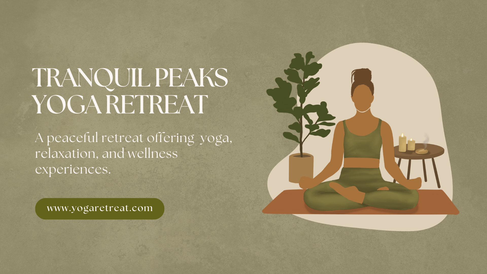

About Tranquil Peaks
Welcome to Tranquil Peaks, your destination for peace, wellness, and spiritual renewal. We are dedicated to providing transformative yoga and meditation experiences in a supportive, welcoming environment.
Our Mission
At Tranquil Peaks, our mission is to create a sanctuary where individuals can disconnect from the chaos of daily life and reconnect with themselves. We believe that through yoga, meditation, and mindfulness practices, everyone can achieve greater peace, balance, and wellbeing.
The Retreat
Our peaceful retreat offers a calm escape from everyday life, with guided yoga sessions, meditation, and relaxation experiences set in a natural environment.
The Atmosphere
Our experienced instructors provide a welcoming and supportive environment, helping guests improve both physical and mental wellbeing.
Why Choose Tranquil Peaks?
- Peaceful and relaxing setting: Surrounded by nature, our retreat offers the perfect backdrop for transformation.
- Experienced yoga instructors: Our teachers bring years of expertise and a genuine passion for helping others.
- Small group sessions: We keep groups intimate, ensuring personalized attention and a supportive community.
- Focus on wellbeing and mindfulness: Every session is designed to nurture your physical, mental, and emotional health.
- Natural surroundings: Our location in nature enhances the healing and meditative experience.
- Flexible retreat options: Whether you have a weekend or a full week, we have retreat options for everyone.
Experience the Serenity

Ready to Join Us?
We'd love to welcome you to Tranquil Peaks. Get in touch with any questions or to book your retreat.
Contact Us